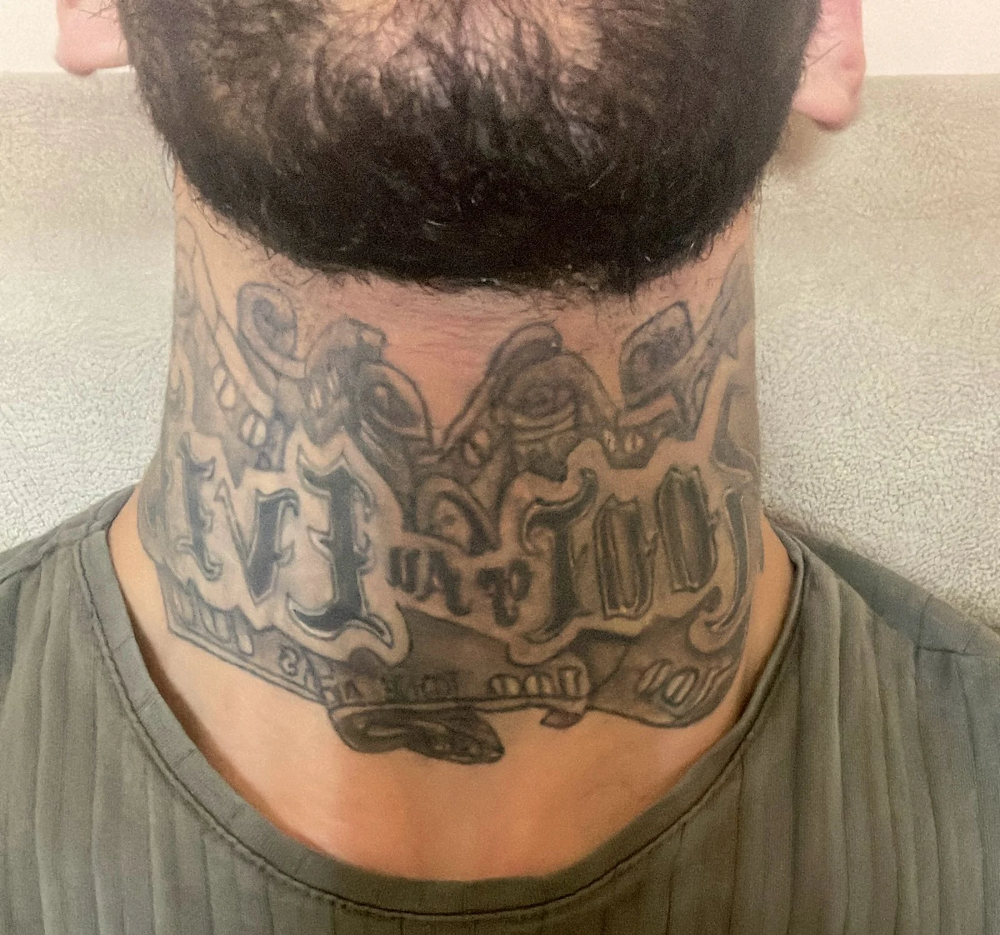
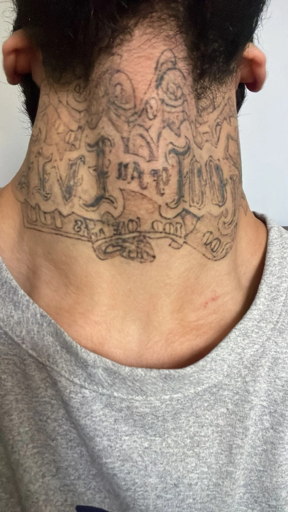
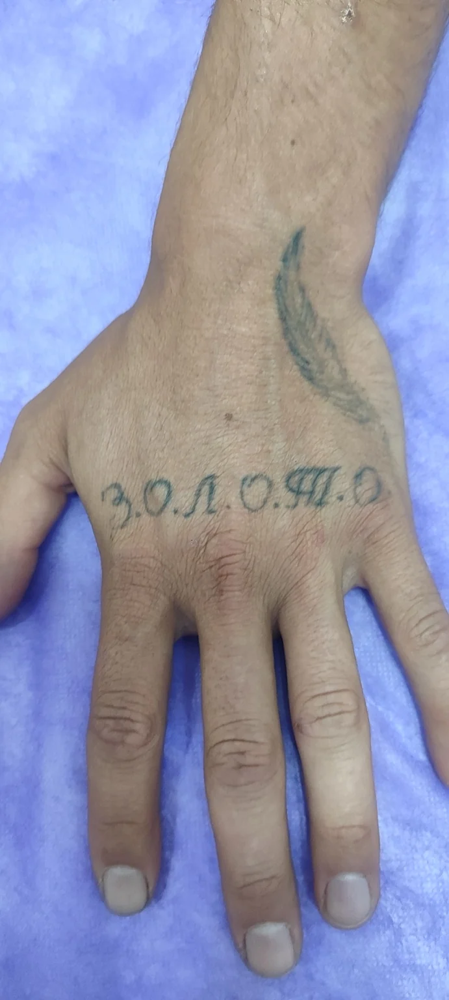
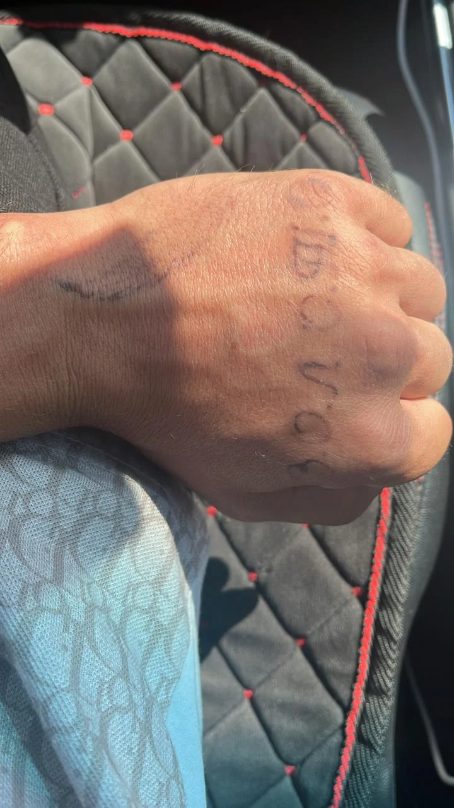
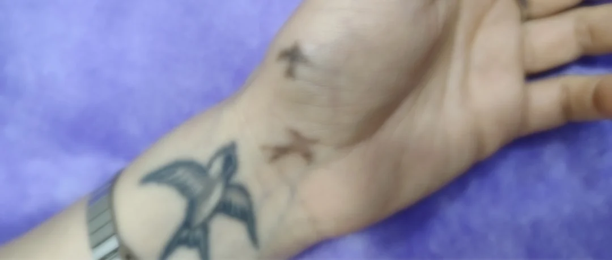
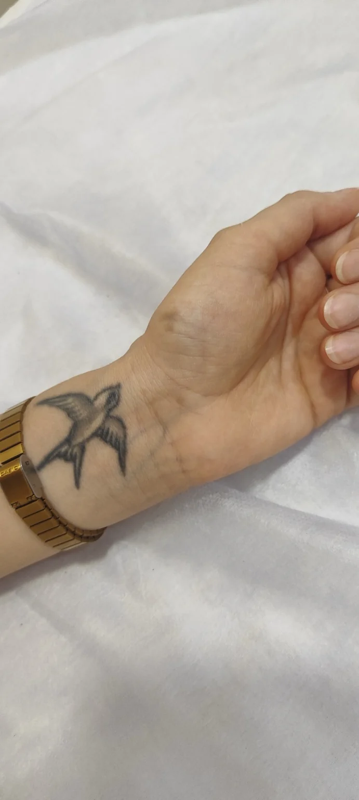
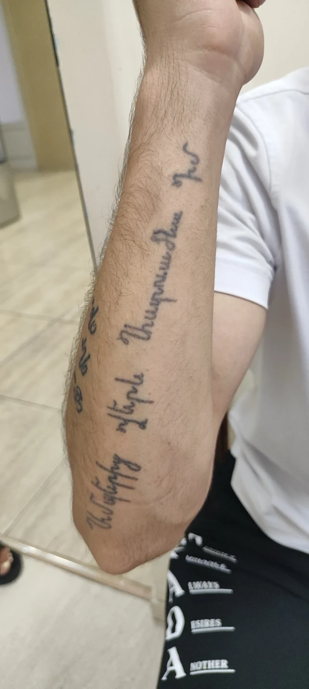
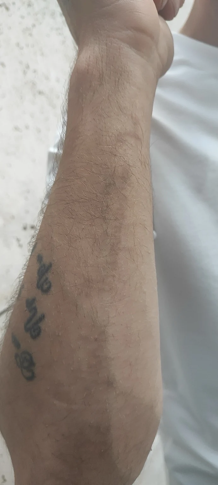

Удаление тату в Ереване начинается с консультации. Отправьте фотографии татуировки и основные детали, чтобы студия могла предварительно оценить запрос до визита.
Реальные случаи удаления в Studio 14. Результат зависит от татуировки, пигмента, кожи и индивидуального плана процедур.








Перед визитом отправьте фотографии и основные данные о татуировке.
Студия подтверждает, подходит ли услуга, и объясняет дальнейший план.
Количество и интервалы между сеансами зависят от конкретной татуировки и уточняются на консультации.
Рекомендации по уходу даются с учетом конкретной процедуры и этапа заживления.